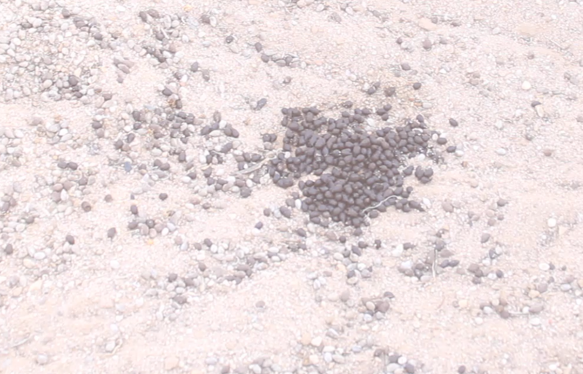
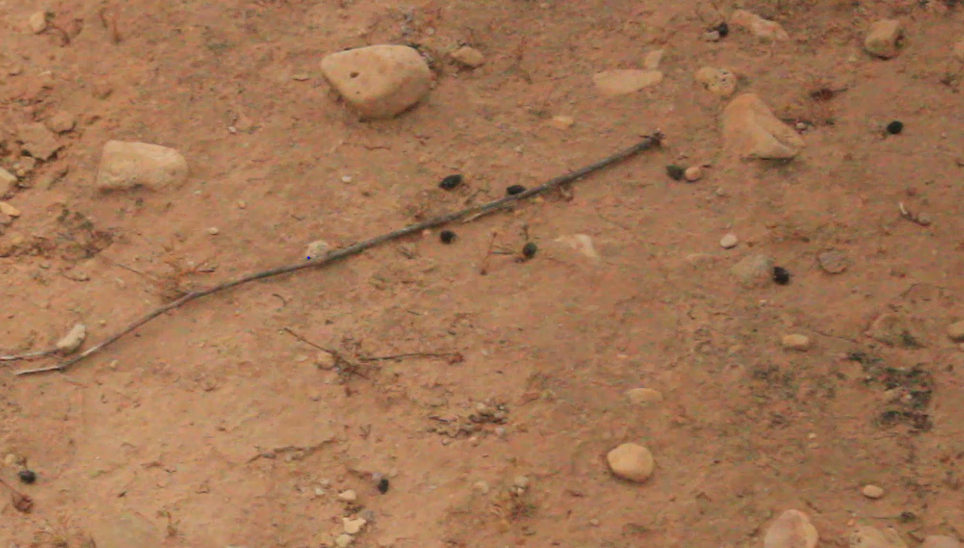

Antelope Study & Field Monitoring Protocol
Session Lead: Dr. Marie ?
Affiliation: .........................
Subject: ...........................
1. Introduction & Context
Arid ecosystems, such as those found in North African protected reserves, host specialized ungulate species of high conservation value. Studying and monitoring these species requires a combination of direct vehicular surveys, indirect trace analysis, and a thorough understanding of their complex social and territorial behaviors.
2. Field Monitoring Techniques & Protocols
The primary active monitoring technique involves dedicated conservation teams patrolling designated protected areas using vehicles (cars or motorbikes) to locate and count individuals within their specific habitats.
Core Protocols:
- Direct Census Counts: Observers systematically survey core antelope zones to document population size, group composition, and demographic ratios.
- Preserving Wild Instincts (Crucial Rule): Teams must maintain a respectful distance and avoid approaching the animals too closely. This ensures that antelopes retain their natural wariness and healthy fear of humans, preventing dangerous habituation.
3. Social Structures & Behavioral Dynamics
During monitoring sessions, field researchers typically encounter three main types of social groupings:
A. Harem Groups
Composed of one dominant alpha male accompanied by multiple females and their young.
B. Maternity Pairs
Couples observed bonding or protecting newly born offspring in secluded cover.
C. Solitary Males
Single males roaming alone, often challenging territorial boundaries.
Post-Partum Dynamics
In harsh arid environments, maintaining continuous territorial dominance is energetically demanding. Following birth, females isolate themselves to protect fawns. Frequent challenges from rival bachelor or displaced males lead to territorial takeovers (alpha turnover). A new male may displace the resident, associating with the females and offspring, thereby altering group leadership structures.
4. Track & Fecal Trace Analysis
Because direct sightings can be limited by camouflage and vast terrain, indirect trace monitoring is essential for evaluating presence and movement patterns.
Key Trace Indicators:
- Territorial Male vs. Female Feces Distribution: Territorial males frequently deposit feces in communal latrines and dung middens along boundaries, pausing regularly to scent-mark. Females and transients travel more continuously without pausing as frequently, resulting in a scattered distribution.
- Freshness Assessment: Field researchers determine dropping age based on moisture—wet/moist droppings indicate recent passage (hours), while dry, brittle droppings indicate old activity (days or weeks).

Male

Female